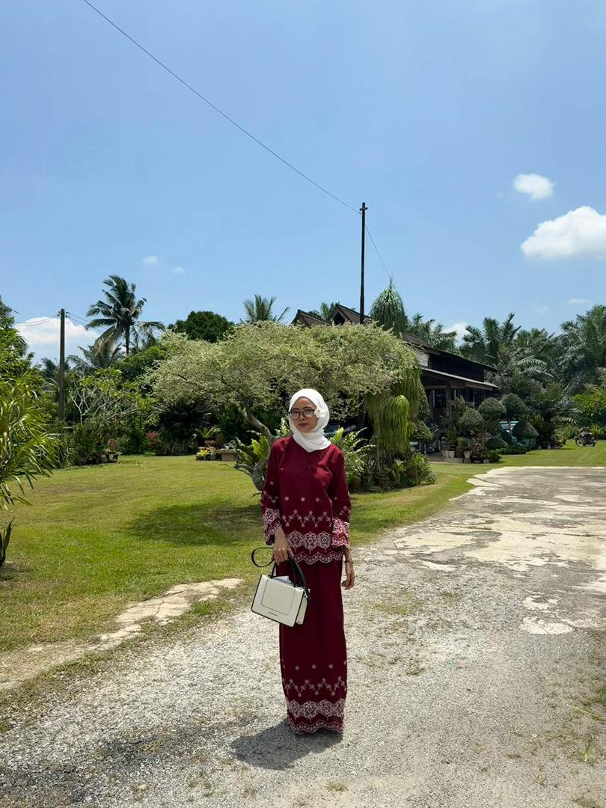
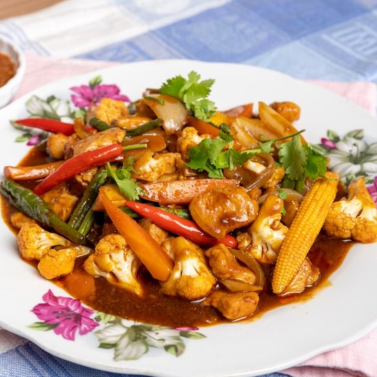
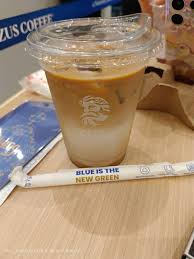

Personal Information

Name: NurIrdina Sufiyah binti Turizal
Nickname: Dina / Irdina
Age: 20 years old
Date of Birth: 8 July 2005
Gender: Female
From: Telok Panglima Garang, Selangor
Nationality: Malaysian
Personality Traits
- Clumsy
- Friendly
- Empathetic
- Forgiving
- Humorous
Favorite Foods & Drinks

Ayam Gepuk (Chicken Breast)

Ayam Penyet

Paprik Ayam

Teh Ais

Milo Ais Kosong
Chagee

Zus Coconut Latte

Matcha
Hobbies
- Singing
- Chatting with close friends (Discord)
- Makeup
- Cooking